smartphone
object biography
Times of Waste

Mining
How many elements are there in a smartphone?
A smartphone contains more than 50 different elements, including rare earth metals and others that are difficult and expensive to mine. In addition, the rare earth cerium is used to polish the screens: in this case, an element is used that is not part of the finished product.
Metals never die
Many of these elements are commonplace in our environment, such as oxygen, carbon or silicon. There are also elements for which recycling has worked well for decades, for example silver. The recycling of iron (the ‘scrap trade’) has been practiced for thousands of years – each piece of iron used today contains a few iron atoms that have been in circulation since the Iron Age. This is one of the axioms in the extraction, use and deposition of metals: „Metals never die“ (Rainer Bunge, Hochschule Rapperswil).

Schweizerische Metallhandels AG Germany, Embrach, Switzerland: bismuth as an investment
A metal cannot be destroyed or ‘disposed of’. At best, it can be mixed so strongly with other substances that recycling is no longer technically feasible or simply uneconomical. Raw materials ‘destroyed’ by mixing.
What are the problems
Problematic are elements in which
- a scarcity of raw materials is foreseeable because demand is increasing and recycling is not operational (rare earths)
- the recovery causes massive environmental problems (rare earths, gold)
- mining takes place in countries with low social and environmental standards (rare earths, generally almost all metals)
- mining in war and crisis areas (‘conflict minerals’), e.g. cobalt, tantalum, tin, copper from the Democratic Republic of the Congo.
Globalization in the commodities market
In the course of globalization, the following trend can be seen: raw materials are no longer necessarily mined and smelted where the highest concentrations of such materials are available and the connection to existing infrastructure and sales markets is good, e.g. coal from the Ruhr region. In recent decades, new mine sites have tended to appear in countries with low environmental and social standards. Since global transport is disproportionately cheap due to the low oil price, and trade restrictions have largely disappeared, exactly where the raw materials are geographically located plays only a secondary role.
A pertinent example of this development is the extraction and smelting of rare earths, in particular neodymium, which generates considerable quantities of radioactive thorium and uranium. Potentially viable deposits in Austria, Greenland or other countries with clear legal framework conditions are not even considered for exploitation. In these countries costly ‘final’ storage facilities would have to be built for the radioactive elements thorium and uranium produced during mining and processing. In addition, high radiation protection requirements and other laws for the protection of miners cause additional costs, landowners would have to be compensated, objections from environmental groups – in some cases quite justified – could delay approval procedures, and so on.
Audioessay object biography Smartphone/Neodym (10:11)
Bayan Obo
The largest REE mine in the world is actually an iron mine: in Bayan Obo in Inner Mongolia (PR China), iron plus rare earths are currently mined at two sites. And to a gigantic extent: the tailings (viscous residues) brought about during mining are pumped into several huge lakes, some of which are over 10 kilometres long – the largest such waste lakes in the world.
The processing of the rare earths takes place about 150 km south in the mining town of Baotou. Radioactive thorium and uranium are released and the strong acids used in the extraction of rare earths enter the environment. This makes agriculture impossible anywhere near the industrial plants. The inhabitants of several so-called ‘cancer villages’ near the metal processing plants have been resettled in recent years. In the smelting works and the further processing operations, some of the most elementary safety precautions for occupational health and safety are missing: dust particles enter the lungs of the workers and cover the surrounding fields.
The mining town of Baotou, with more than 2 million inhabitants, is both a symbol of China's growing economic power and the ruthless exploitation of resources at the expense of the environment and human health.
"Because of the chemical similarities between rare earths, uranium, and thorium, separation is extremely difficult and requires firing at temperatures above 300 degrees Celsius. The high temperatures convert thorium to a mobile and water-insoluble form, which accumulates in the mine tailings and is difficult to recover or reuse… There are few incentives to invest in the development of more efficient techniques to recapture radioactive waste material."
Julie Michelle Klinger
Sources: Butler, Keira. Your Smartphone's Dirty, Radioactive Secret. Mother Jones 2012; Toby Smith. Rare Earthenware: a journey to the toxic source of luxury goods. In: theguardian.com, 15.4.2015; www.unknownfieldsdivision.com (Rare Earthenware).
Bayan Obo, Baotou, Inner Mongolia, China: Development of the mine site from 1984 to today.
Kolwezi
Kolwezi, Lualaba Province, DR Congo (12:20)
Kolwezi is the centre of small-scale mining of cobalt and copper. Prospectors, like the educated pedagogue Marcel Kapepe, dig out life-endangering pits to extract the minerals. The sale of the mined ore to Chinese traders is regarded by some as a welcome income, and by others as exploitation. The journalist Jean Jaques Kalonji has a vision for his country of the construction of smelting plants for the processing of the raw materials. This would allow the metals to be sold directly to production companies, and Africa could then participate in the production of smartphones.
The material comes from the four-part documentary Chinafrika.mobile by Daniel Kötter, who worked on the same smartphone aspects as the team of Times of Waste in the context of the art and exhibition project Chinafrika.under construction: raw material extraction, production, reuse, recycling. The footage was created locally in Kolwezi, Shenzhen, Guangzhou and Lagos in collaboration with local protagonists.
Camera / interview: Marcel Kapepe, Jean Jacques Kalonji, Paulin Koka, Jerry Mutomb
Production: Sandrine Longolongo, Edmond Mutombo
Editing, camera: Daniel Kötter
The far-reaching consequences that may be caused by restrictions became evident in the US Dodd-Frank law: it caused a quasi-boycott by multinational companies, for instance, of minerals of Central African origin supposed to be from mines in local conflict areas. Initiatives like the iTSCi program (ITRI Tin Supply Chain Initiative), a joint industry project designed to address conflict mineral concerns in the Democratic Republic of Congo (DRC), Rwanda and other countries of the Great Lakes Region, attempt a counter-strategy to combat the resultant unemployment. As Mickael Daudin, reporting officer of the iTSCi program, mentioned in the interview with Times of Waste, their program establishes traceability and due diligence in the upstream mineral chain – from the miner to the smelter – by working with local governments and their field agents. By allowing companies to source metals responsibly, total disengagement from the Great Lakes Region can be avoided.
The “Konzernverantwortungs-Initiative“ – “global business, global responsibility” – launched by Swiss NGOs in spring 2015 seeks to bring transparency to the trading chains of multinational companies based in Switzerland, which are currently only voluntarily made transparent and traceable. Human rights, social and ecological standards for mining raw materials and transparency throughout the whole trading chain should become a standard and, in case of accidents, the corporations would have to take responsibility. These actions seem to be a more integral way to raise consciousness for raw materials and their global entanglements than Dodd-Frank is.
Sources: Interview with Mickael Daudin, reporting officer ITRI/iTSCi/PACT (19.8.2015); http://wirtschaftslexikon.gebler.de/Definition/dodd-frank-act.html; www.itri.co.uk; www.konzern-initiative.ch.
“Minerals that didn’t make the final list continue to be mined in dire conditions, as in the case of the cobalt used in lithium ion batteries. Additionally, because of the rule’s very specific geographic scope, the definition of ‘conflict-free’ is somewhat specious – are metals mined by child labour conflict-free if that mine is in Colombia instead?”
Ingrid Burrington ((Quellenangaben in Bibliographie))


 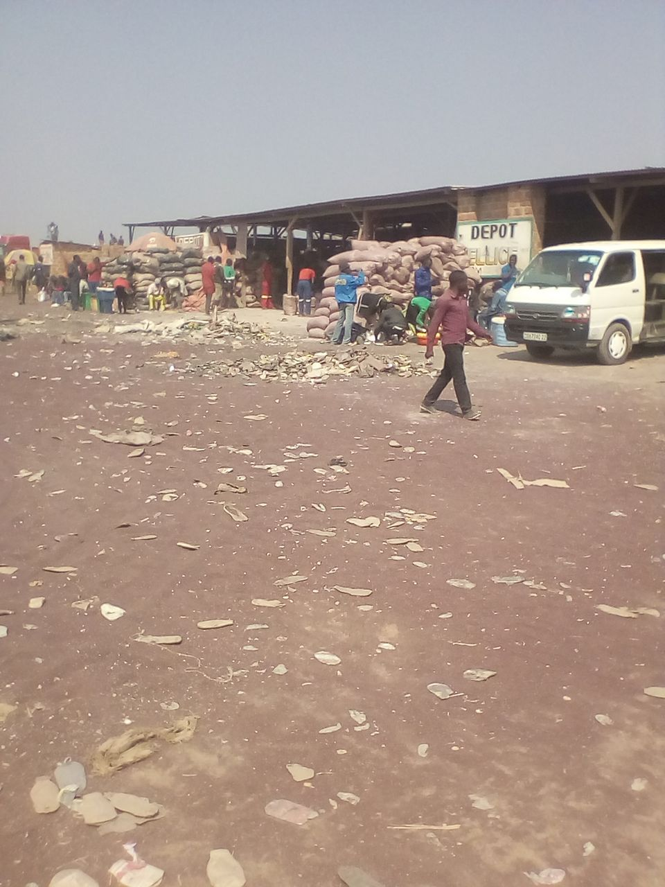
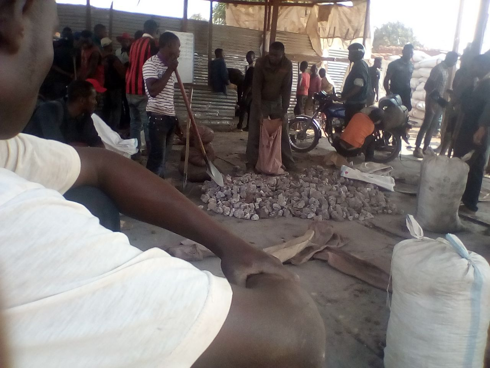
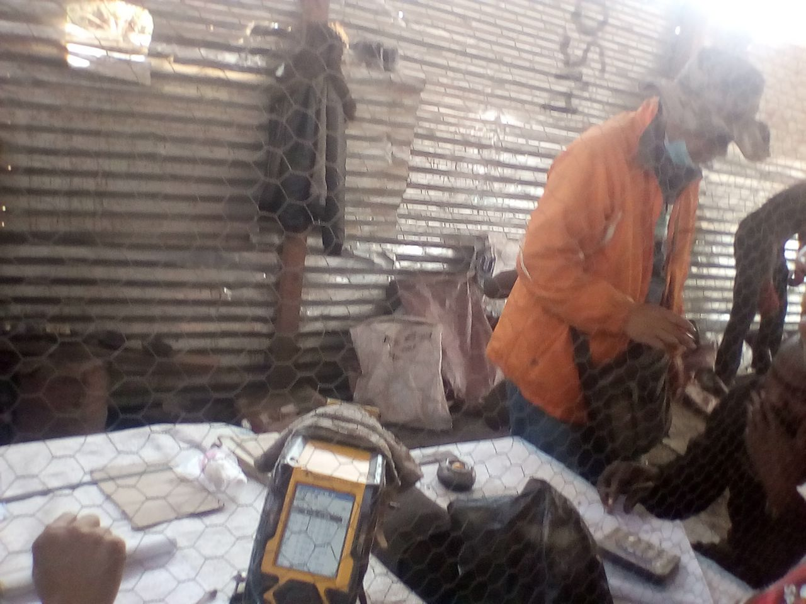
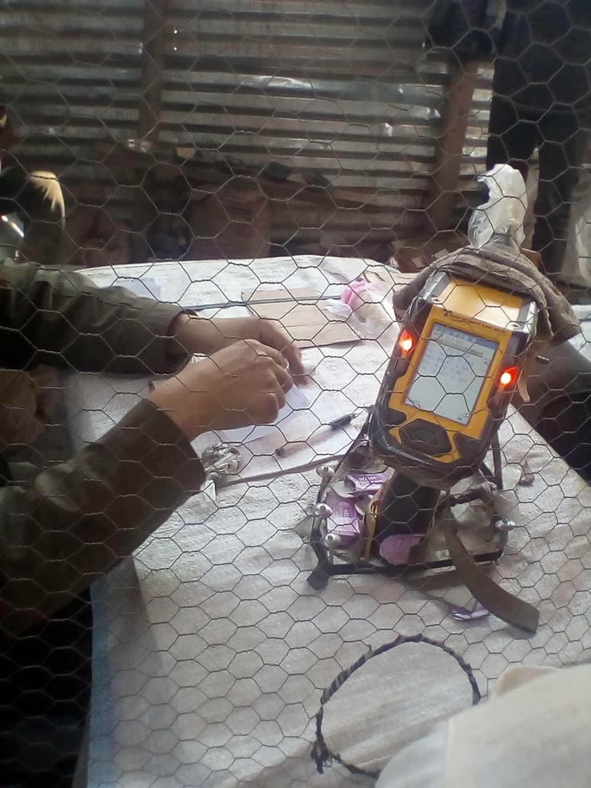
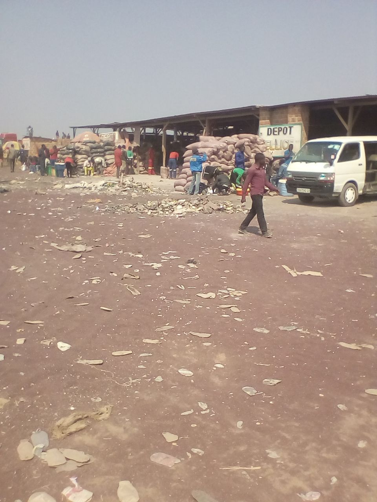
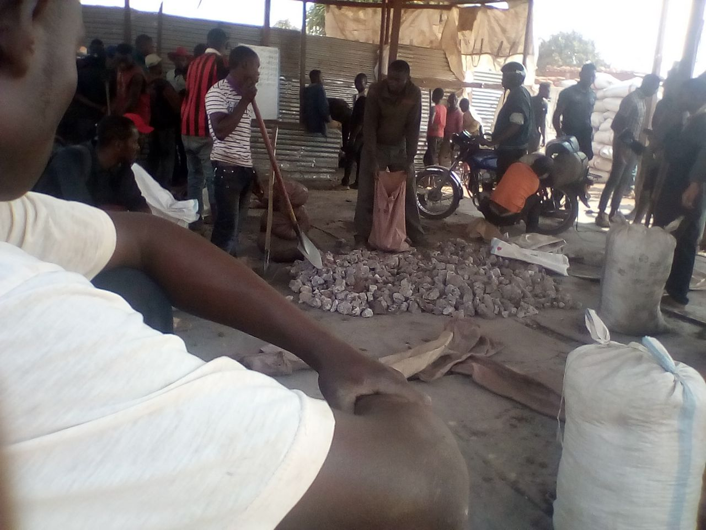
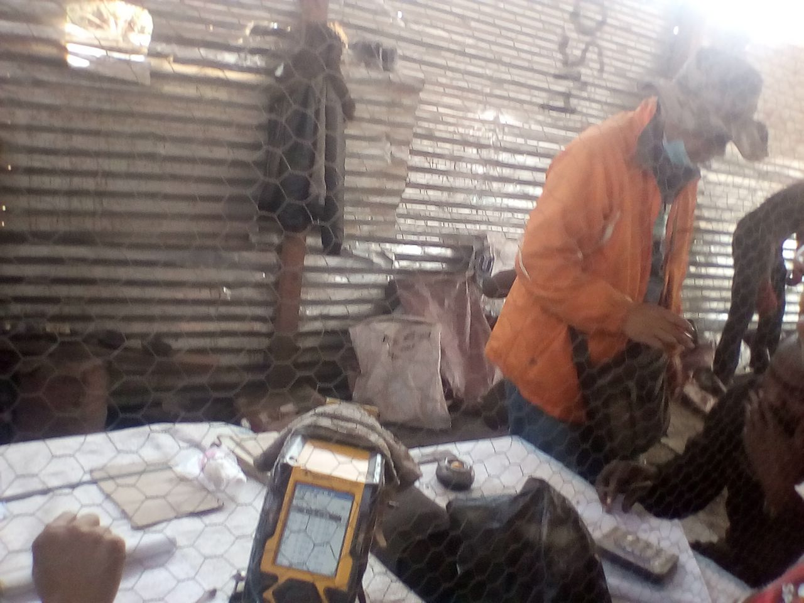
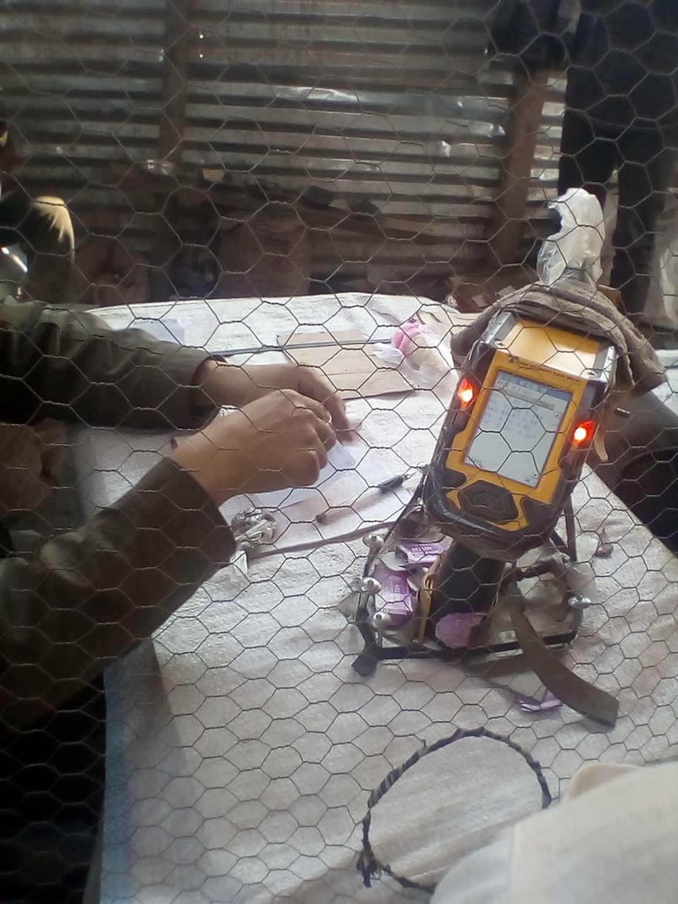
Kolwezi, Lualaba Province, DR Congo: transport and sale of mined ore.
“We pull the sacks out of the mine by rope. We take the sacks by bike or motorbike to the nearest vehicle and then to the depot where we sell the sacks. The Chinese own the depots.”
“When we arrive with the cobalt in the depot, we empty all the sacks on the ground. We crush the cobalt and then remove small amounts to grind up. We heat the material in a pan and then place it on the 'Metorex' device, which measures the percentage [mineral content]. One Chinese person mans the scales, another the Metorex, and the third negotiates the price.”
Marcel Kapepe, Kolwezi Miner, Lualaba Province, The Democratic Republic of the Congo
Mount Weld/Kuantan
A particularly problematic example of the outsourcing of ‘dirty’ metal smelting to low-wage countries is the processing of rare earths (REEs) from western Australia's Mount Weld Mine in Malaysia. Rather than carrying out the rare earth extraction at the mine site in Australia or, alternatively, on the West Coast of Australia, the raw ore containing REEs ore is shipped over 6,000 kilometres over the Indian Ocean for further processing in Kuantan, Malaysia.
The Australian mining company Lynas' plant, which was quickly raised in a mangrove forest with inappropriate foundations, does not have a repository for the radioactive substances produced during processing, contrary to the recommendations of the International Atomic Energy Agency IAEA, which is generally considered business-friendly. Instead, the operators intend to dilute the radioactive waste generated until they are below the declared radioactivity limits. The waste may then be used in the construction industry and as a soil additive so-called ‘Condisoil’. What is also scandalous was the approval process conducted without legally compliant environmental impact assessment, and intimidation by the Malaysian government towards opponents of the plant.
Engineers from the internationally renowned plant builder Akzo-Nobel leaked information about faulty concrete tanks and other engineering flaws to the New York Times. Akzo-Nobel terminated their collaboration with Lynas in the middle of the construction phase.
The construction of the plant led to the largest environmental protest movement in the history of Malaysia. This is also because a rare earth refinery operated in 1979-1994 in Perak (Malaysia) is associated with numerous cancer deaths in the locality. The plant, operated by Mitsubishi Chemicals, was legally shut down in 1994, and Mitsubishi was required to spend approximately $100 million on a clean-up programme. Compensation to victims, however, was not paid.
Despite the protests, the Lynas plant, which is about ten times larger than the Mitsubishi project, went into operation at the end of 2011 – and is now economically inefficient due to the decline in REE commodity prices. Siemens and BASF were and still are both significantly involved in the project through joint ventures and supply contracts.
Sources: New York Times, 31.1.2012; Lee, Jade. Seltene Erden – Fluch oder Segen für Malaysia? December 2012; Heuveling, Johanna. Seltene Erden – Menschenleben nicht gerechnet. In: Schattenblick.de. 02/11/2016; mineralienatlas.de; stoplynas.org.
Mountain Pass Mine
This mine opened as early as 1952 and has long been the leading REE mine worldwide. Authorities closed the mine in the late 1990s following a dam breach in which mine tailings (viscous mining waste) were released. The clean-up took years.
As a result of China's export restrictions, production restarted in the mine, which was reopened in 2007 – with the promise of making extraction more environmentally friendly: in fact, some of the material may be exported to Estonia for reprocessing (as is done from Australia to Malaysia). Besides that, Molycorp owns two mines in China, about which the company provides no information. The Mountain Pass Mine was closed again in 2015 following the renewed fall in prices of rare earths.
Sources: Mining.com; https://en.wikipedia.org/wiki/Mountain_Pass_rare_earth_mine; Adams, John. Mountain Pass Mine closure puts US at greater risk. Thehill.com, 9.11.2015.
Southern China
In several southern Chinese provinces (including Jianxi, Fujian and Guangdong) rare earths (REE) are illegally mined: this is done by digging holes in clay containing REEs, pouring strong acids in, and thus extracting the eluate.
Since the mining method is extremely primitive and there are thousands of mini-sites, no wastewater treatment takes place. This leads in parts to massive damage to the local agriculture and fish farming; drinking water is unpotable, and so on. Especially during the high price phase of the rare earths from 2010, the business was lucrative and was, according to local sources, often conducted with the participation of local party officials. The government in Beijing has already promised to remedy the situation several times, but appears to be only partially successful against the rampant corruption. From the end of 2016 to April 2017, there was another anti-corruption campaign in this area: now, through tracking the product, attempts are being made to stop illegal exports. Many companies also had to close due to environmental regulations.
Sources: mineralienatlas.de; selteneerden.de (Tradium); Bork, Henrik. Chinas skrupellose Jagd auf die Seltenen Erden (translatable as “China's Unscrupulous Pursuit of Rare Earth Metals”). In: Tagesanzeiger, 08.11.2010.
Embrach
In a Swiss high-security customs warehouse near Zurich airport, Schweizerische Metallhandels AG Germany (SMH) stores strategic metals as value assets.
In (financial) crises, they are protected from expropriation by the German state. Metals such as indium, hafnium or gallium have a comparatively low annual production. Their prices are determined on commodity stock markets, and with scarcity they rise.
Due to the often irretrievable implementation of these rare metals in high-tech products, customers expect prices of their assets to rise. Conversely, research laboratories are working intensively on the recovery of rare metals such as indium; on the one hand, to prevent possible future shortages, and on the other hand, to cut back on the mining of these raw materials obtained under health-damaging and ecologically problematic conditions.
On 24.1.16, we accompanied one of the monthly customer tours and had an insight into the asset storage systems in the bonded warehouse. We were allowed to take photographs, but not to film. We were made aware of the company through discussions with Empa, which checks the purity of the metals. The issue that causes controversy is that the company deprives the market of valuable raw materials by storing an excess of metals to meet their clients’ needs.
Discussions with and accompanied tour by Jörg Wiedermann, Thomas Budde, Stefan Gut, Schweizerische Metallhandels AG Germany (24.1.2016); Interview with Heinz Böni, Empa St. Gallen (7.9.2015).


 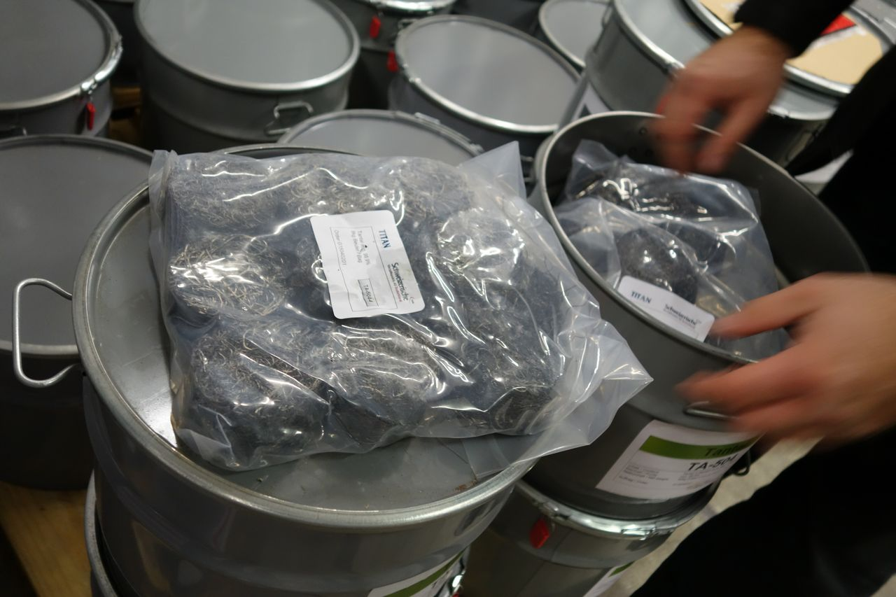
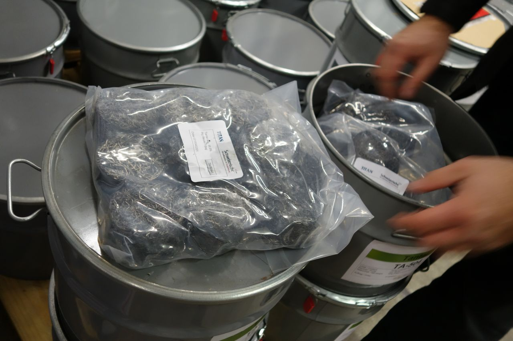
 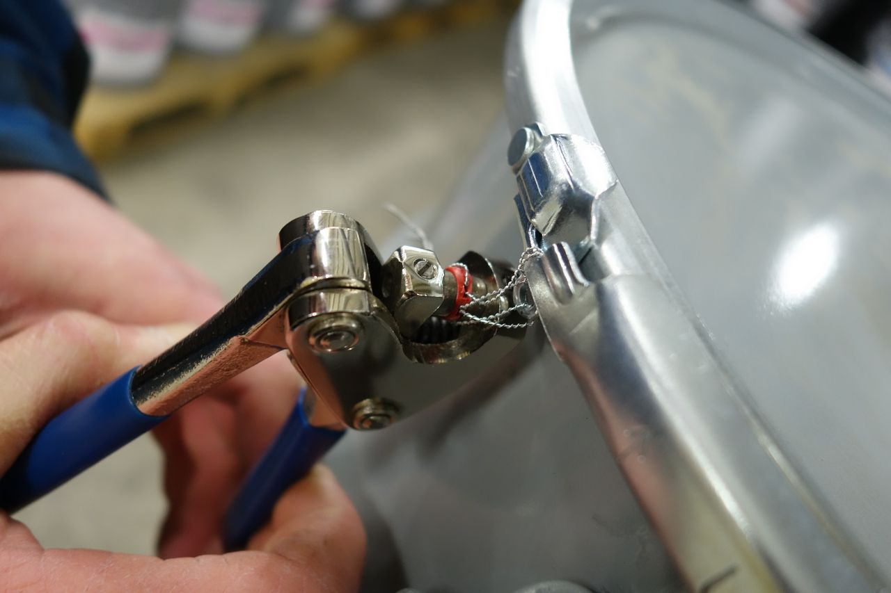
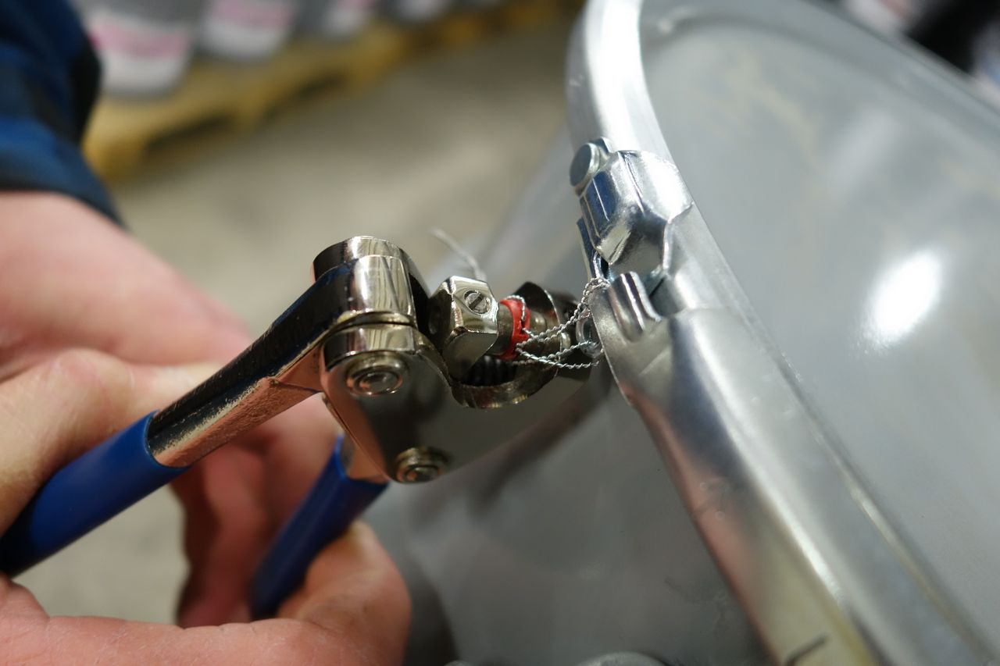
 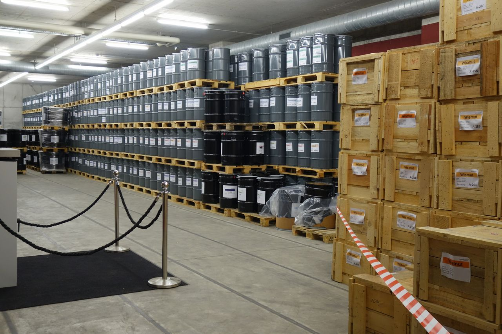
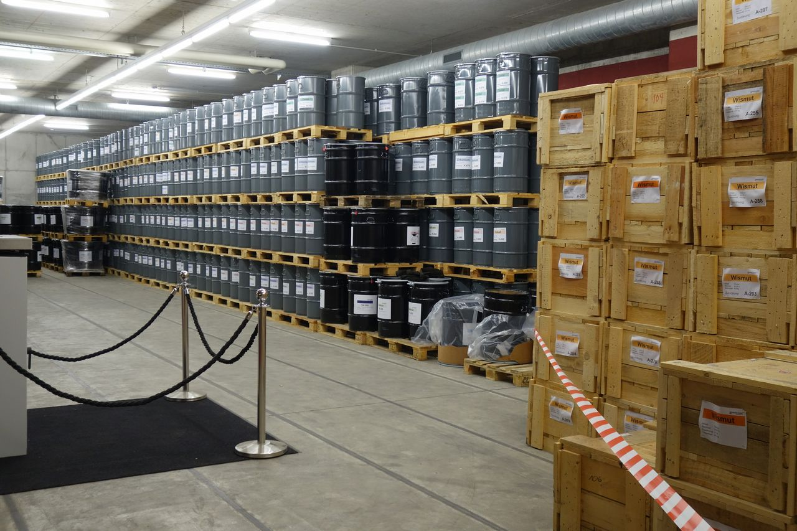


Schweizerische Metallhandels AG Germany, Embrach, Switzerland: 'strategic metals' including cobalt and indium stored as assets in the underground high-security bonded warehouse.